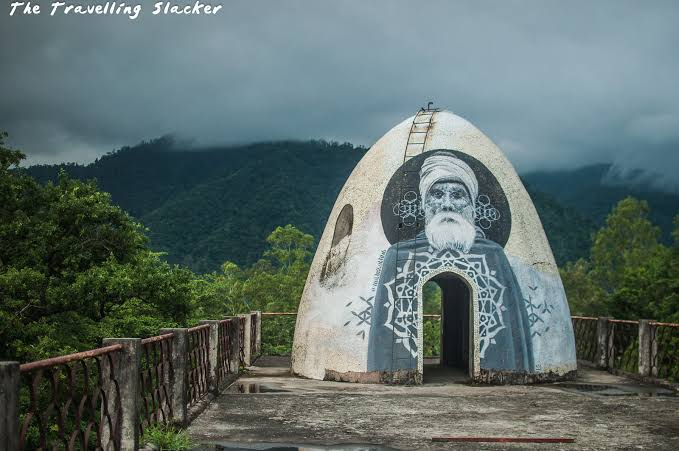

Outings · half-day trip
The Beatles Ashram
In 1968, the Beatles came to Rishikesh to study meditation under Maharishi Mahesh Yogi and ended up writing much of what became the White Album. The ashram — officially Chaurasi Kutia — sits inside Rajaji National Park, its old meditation huts and lecture halls now half-reclaimed by the forest and covered in murals left by visitors over the years. Less a monument than a quiet, overgrown reminder of why people have been coming here to sit still for a long time.